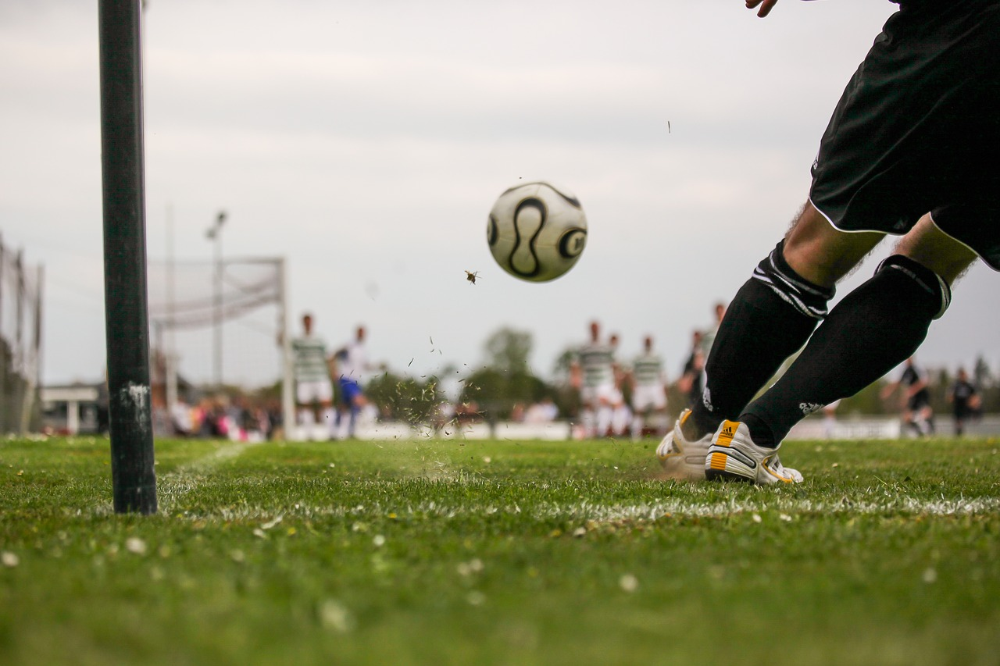

Pagina Inicio
Portafolio
Página kinal
Pagina Inicio
Portafolio
Página kinal

Uno de mis pasatiempos que mas me gusta hacer es ver o practicar futbol, me gusta ver partidos ya sea en vivo o repetidos, tambien me gusta practicar deportes como lo pueden ser: boxeo, natacion, futbol, basquetball. En general todo lo que tiene que ver con los deportes, me gusta en especial el futbol ya que es un deporte en el que en cualquier momento puede pasar algo, tienes que estar pendiente. Pero en especial me gusta jugarlo, es un deporte en el que puedes jugar en cualquier posicion, y cada una va a tener una importancia dentro del campo. Cuando estaba pequeño no me gustaba, ni jugarlo y mucho menos verlo, pero al crecer me empezo a gustar cada vez mas. Probablemente veo mas de 1 hora al dia en cosas que tengan que ver con algun deporte, y trato de practicarlo lo mas que pueda, es algo que me distrae y me entretiene mucho, me hace feliz.
